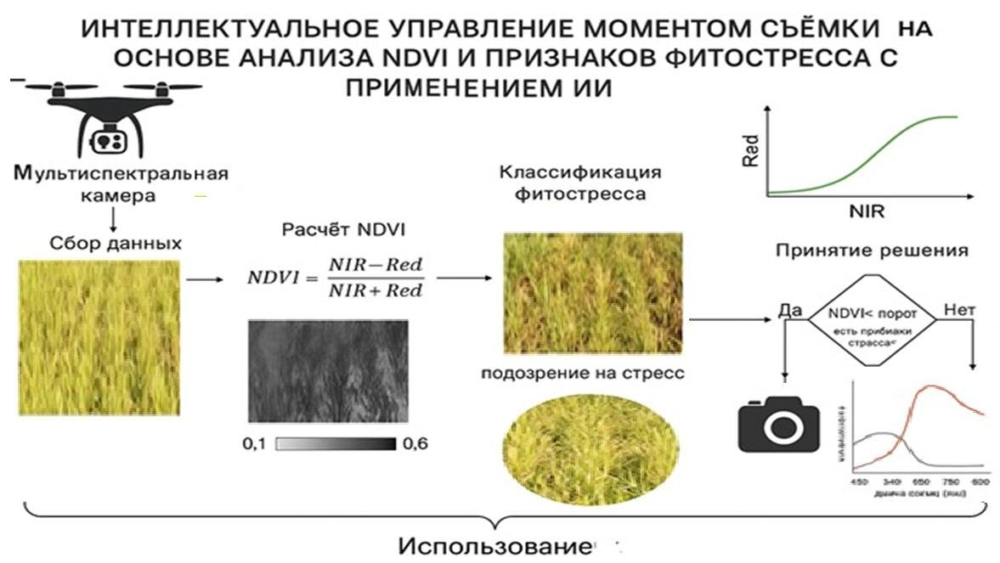

Результаты: NDVI и принятие решений
Интеллектуальное управление моментом съёмки на основе анализа NDVI и признаков фитостресса.

1. Расчёт NDVI
NDVI = (NIR − Red) / (NIR + Red). Здоровая растительность отражает много ближнего инфракрасного (NIR) и поглощает красный (Red).
2. Движение дрона и завершённая карта NDVI
Цвет: красный — низкий NDVI (стресс), зелёный — высокий. Линия — траектория дрона, красные квадраты — места съёмки. Поле смоделировано программно.
3. Прогнозирование
Линейная регрессия (класс «Машинное обучение»). Измерения смоделированы; при наличии реальных данных замените массив.
4. Результаты обучения
5. Код
import numpy as np
def ndvi(nir, red):
nir, red = nir.astype(float), red.astype(float)
return np.where(nir + red == 0, 0, (nir - red) / (nir + red))
THRESHOLD = 0.4
v = ndvi(nir_band, red_band).mean()
if v < THRESHOLD: # признаки фитостресса
drone.take_photo() # дрон делает снимок#include <iostream>
double ndvi(double nir, double red) {
if (nir + red == 0.0) return 0.0; // защита от деления на ноль
return (nir - red) / (nir + red);
}
int main() {
const double threshold = 0.4;
double v = ndvi(0.35, 0.25);
if (v < threshold) std::cout << "Фитостресс: делаем снимок\n";
else std::cout << "Растения в норме\n";
std::cout << "NDVI = " << v << "\n";
}
6. Тестирование
| Проверка | Результат |
|---|
Выполнил(а): ФИО студента, группа XX-XX